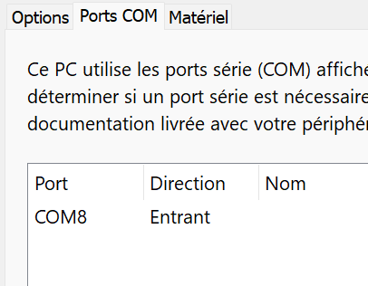
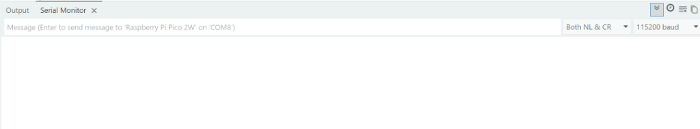

Dans les environnements industriels et biomédicaux, la maintenance et le paramétrage d'équipements scellés ou difficiles d'accès s'effectuent sans liaison physique, au moyen d'un lien sans fil sécurisé à courte portée (Bluetooth). Vous êtes chargé de développer et de qualifier le sous-système de communication d'un pupitre de télé-exploitation sécurisé.
Le système embarqué repose sur la carte Raspberry Pi Pico 2 W (microcontrôleur RP2350 Dual Cortex-M33, 150 MHz, puce radio Infineon CYW43439), enfichée sur son Grove Shield pour Pi Pico. Elle dialogue avec :
0x3C), une matrice de LED 8x8 (HT16K33, 0x70) et un accéléromètre 3 axes numérique (ADXL345 / LIS3DHTR, 0x53) pour la télémétrie d'inclinaison.La qualification temporelle et le décodage de trames sont réalisés avec l'analyseur logique mixte Digilent Analog Discovery 3 piloté par WaveForms. Le terminal distant de supervision est indifféremment un PC de la salle de TP équipé du Bluetooth (via un port COM virtuel) ou un smartphone (application Serial Bluetooth Terminal).
Le module Bluetooth Grove sort d'usine avec une configuration générique impersonnelle : un nom par défaut (ex: "HM-10", "BT05" ou "HC-06"), un code PIN standard ("1234" ou "0000"), un débit de 9600 bauds et un mode esclave (Slave). Si tous les binômes allumaient leur maquette en même temps dans la salle sans configuration préalable, il serait impossible de distinguer les équipements et n'importe quel poste pourrait se connecter sur le pupitre du voisin !
Les commandes AT permettent de personnaliser et sécuriser notre équipement selon notre cahier des charges :
AT+NAMECIEL_PUPITRE_B1) pour le reconnaître immédiatement sur les PC et smartphones de la classe.AT+PIN9876).AT+ADDR?) et la version logicielle.Règle fondamentale des deux modes :
AT.Les cartes Raspberry Pi Pico 2 W utilisées en atelier peuvent contenir des résidus de firmwares précédents (MicroPython, CircuitPython) ou des tables de partitions LittleFS qui occupent le contrôleur USB et bloquent la détection du port COM virtuel sous Arduino IDE.
Le fichier nuke_universal.uf2 (compatible architectures RP2040 et RP2350 du Pico 2) est un utilitaire officiel qui écrit la valeur 0xFF sur l'intégralité des secteurs de la mémoire flash QSPI (4 Mo). Il efface tout résidu de code bloquant et force le microcontrôleur à redémarrer immédiatement dans son chargeur de démarrage matériel (ROM Bootloader).
BOOTSEL situé directement sur la carte Pico 2 W.BOOTSEL enfoncé, branchez le câble USB au port de votre ordinateur, puis relâchez le bouton après 2 secondes.RP2350 (ou RPI-RP2).nuke_universal.uf2 directement sur ce lecteur :
| Code | Compétence du Référentiel | Critères de Réussite & Tâches associées dans ce TP |
|---|---|---|
| C04 | Analyser une structure matérielle et logicielle |
• Décoder les chronogrammes des liaisons série asynchrones (UART) et synchrones (I²C). • Justifier l'affectation matérielle des contrôleurs UART du RP2350 (UART0 pour clavier sur GP0/GP1 et UART1 pour Bluetooth sur GP4/GP5). • Expliciter le fonctionnement du profil SPP (couches RFCOMM / L2CAP) et du pontage passerelle USB-Série. • Analyser le protocole de commandes AT brutes sans caractère de terminaison (mode No line ending). |
| C05 | Concevoir une structure matérielle et logicielle |
• Développer l'algorithme de routage non-bloquant avec buffer circulaire (Ring Buffer FIFO). • Implémenter une machine à états finis (FSM) pour le décodage d'un protocole industriel avec contrôle d'intégrité (Checksum XOR). • Piloter sur le bus I²C mutualisé (via Hub) l'afficheur OLED SSD1306, la matrice LED et l'accéléromètre 3 axes. |
| C06 | Valider une structure matérielle et logicielle |
• Mettre en œuvre l'analyseur logique Digilent Analog Discovery 3 et le logiciel WaveForms. • Configurer les décodeurs de protocoles UART et I²C sous WaveForms Logic Analyzer. • Mesurer avec précision les temps bit, le jitter, les niveaux LVTTL 3.3V et le débit utile sur 10 000 octets. • Comparer techniquement la solution Bluetooth externe (module Grove UART) et la solution interne (CYW43439). |
| C07 | Réaliser des maquettes et prototypes | • Câbler les sous-ensembles modulaires Grove sur le shield Pi Pico et le Hub I²C, et raccorder les sondes MTE de l'Analog Discovery 3 en respectant la masse commune (GND). |
0x3C).0x70).0x53).1. Affectation des liaisons séries UART :
Le RP2350 possède deux contrôleurs UART matériels indépendants :
UART0 (GP0 / GP1) : géré par Serial1. Il est dédié au clavier numérique série.UART1 (GP4 / GP5) : géré par Serial2. Il est dédié au module Grove Bluetooth.Serial à 115200 bauds).
2. Mutualisation du Bus I²C et Point de Test :
Le port I2C0 du Grove Shield (GP8=SDA, GP9=SCL) est relié au Grove I2C Hub. Les 3 périphériques I²C (OLED, Matrice LED et Accéléromètre 3 axes) y sont connectés en parallèle. Les sondes de l'Analog Discovery 3 (DIO 2 et DIO 3) s'insèrent sur le port disponible pour analyser les trames sans risque de faux contact.
| Signal / Fonction | Broche Pico 2 W | Port Grove Shield / Hub | Sonde Digilent AD3 (Nappe MTE) | Rôle & Format |
|---|---|---|---|---|
| Masse commune (GND) | GND | GND (Hub I²C ou Shield) | GND (Fil Noir - flèche ▼) | Référence de potentiel 0V (INDISPENSABLE) |
| Bluetooth TX (Module) / RX (Pico) | GP5 (UART1_RX) | Port UART1 (Broche Jaune) | DIO 0 (Fil Rose / Orange 0) | Capture des réponses émises par le Bluetooth |
| Bluetooth RX (Module) / TX (Pico) | GP4 (UART1_TX) | Port UART1 (Broche Blanche) | DIO 1 (Fil Vert / Vert-Blanc 1) | Capture des commandes émises par le Pico vers BT |
| Clavier Série TX (Clavier -> Pico) | GP1 (UART0_RX) | Port UART0 (Broche Blanche) | - | Réception des touches tapées au clavier |
| Bus I²C - Horloge (SCL) | GP9 (I2C0_SCL) | Hub I²C (Broche Blanche) | DIO 2 (Fil Bleu / Bleu-Blanc 2) | Horloge I²C commune (OLED, Matrice, Accéléro) |
| Bus I²C - Données (SDA) | GP8 (I2C0_SDA) | Hub I²C (Broche Jaune) | DIO 3 (Fil Jaune / Jaune-Blanc 3) | Données bidirectionnelles I²C |
| Signal Analogique TX (Scope) | GP4 (TX Pico) | Port UART1 (Broche Blanche) | 1+ (Fil Orange) & 1- (Orange/Blanc à GND) | Oscilloscope Voie 1 (Niveau LVTTL 3.3V et temps de montée) |
Pour effectuer cette configuration, nous utiliserons un programme passerelle sur le Raspberry Pi Pico 2 W et qualifierons les échanges avec l'analyseur logique mixte Digilent Analog Discovery 3.
DIO 1 (Broche GP4 du Pico).DIO 0 (Broche GP5 du Pico).9600 bauds.8 Bits, Parity : None, Stop : 1 Bit.DIO 1 en Falling Edge (Front descendant ⮧) pour déclencher l'acquisition dès l'apparition du bit de Start de la commande émise.1 MHz ou 2 MHz et durée totale de capture à 50 ms.Le Raspberry Pi Pico 2 W exécute le programme passerelle ci-dessous en exploitant Serial2 sur les broches GP4 (TX) et GP5 (RX) du port UART1 :
/* =========================================================================
BTS CIEL - Passerelle de commandes AT pour Raspberry Pi Pico 2 W & Grove Bluetooth
Matériel : Raspberry Pi Pico 2 W (RP2350) + Grove Shield (Port UART1)
Broches : GP4 (TX Pico -> RX Bluetooth), GP5 (RX Pico <- TX Bluetooth)
========================================================================= */
// Sur le Raspberry Pi Pico 2 W :
// Serial = Liaison série virtuelle USB vers l'ordinateur
// Serial2 = Port UART1 matériel sur les broches GP4 (TX) et GP5 (RX)
#define BT_SERIAL Serial2
const long BAUD_PC = 115200; // Vitesse de la console série du PC (USB)
const long BAUD_BT = 9600; // Vitesse d'usine du module Grove Bluetooth
void setup() {
// 1. Démarrage de la liaison série USB (PC)
Serial.begin(BAUD_PC);
// 2. Démarrage du port UART1 matériel relié au module Bluetooth
BT_SERIAL.setTX(4); // GP4 = TX sur le port UART1 du Grove Shield
BT_SERIAL.setRX(5); // GP5 = RX sur le port UART1 du Grove Shield
BT_SERIAL.begin(BAUD_BT);
// Attente que le moniteur série USB soit ouvert (max 3 secondes)
unsigned long start = millis();
while (!Serial && (millis() - start < 3000));
Serial.println("\r\n================================================");
Serial.println(" Raspberry Pi Pico 2 W - Passerelle Commandes AT");
Serial.println("================================================");
Serial.println("Module Bluetooth connecte sur UART1 (GP4/GP5)");
Serial.println("Vitesse Bluetooth : 9600 bauds");
Serial.println("Pret ! Tapez 'AT' et appuyez sur Entree pour tester.");
Serial.println("------------------------------------------------");
}
void loop() {
// 1. Ce que vous tapez dans le moniteur série USB est envoyé au module Bluetooth
while (Serial.available() > 0) {
char c = (char)Serial.read();
BT_SERIAL.write(c);
}
// 2. Ce que répond le module Bluetooth est renvoyé vers l'écran du PC
while (BT_SERIAL.available() > 0) {
char c = (char)BT_SERIAL.read();
Serial.write(c);
}
}Ouvrez le Moniteur Série (Serial Monitor) de l'Arduino IDE ou de l'Arduino Cloud Web Editor et configurez impérativement :
No line ending (Pas de fin de ligne).\r\n). Si vous laissez un terminateur, le module l'interprète comme des caractères corrompus et reste silencieux !115200 baud.No line ending à 115200 bauds), saisissez la commande AT puis validez.OK dans la console, et simultanément sur l'écran WaveForms la capture des signaux DIO 1 et DIO 0.AT+NAMECIEL_PUPITRE_X (où X est votre numéro de binôme).AT+PIN1234.AT+ADDR?.while(Serial.available() > 0) et while(BT_SERIAL.available() > 0) dans la fonction loop(). Pourquoi ce programme constitue-t-il un pontage bidirectionnel transparent et non-bloquant ?
BD_ADDR : .............................................................. (Format hexadécimal à 48 bits / 6 octets).« Nous exploitons le profil SPP (Serial Port Profile). Il émule une liaison série asynchrone RS-232 sur les couches radio RFCOMM / L2CAP du standard Bluetooth. »
Cette phrase clé du référentiel BTS CIEL décrit la pile protocolaire normalisée du Bluetooth classique :
read() / write()) sans avoir à gérer la complexité des trames radio.1. Le problème des réceptions bloquantes :
À 9600 bauds, la transmission d'un octet prend environ 1,04 ms. Si votre microcontrôleur tourne à 150 MHz et attend les octets avec une boucle bloquante ou des delay(), le processeur perd des centaines de milliers de cycles d'horloge. L'affichage de l'écran OLED se fige et la lecture des capteurs est interrompue.
2. Le principe du Buffer Circulaire (FIFO) :
Un tampon circulaire alloue un tableau d'octets de taille fixe (ex : #define BUF_SIZE 64) géré par deux index :
head (tête d'écriture) : incrémenté à chaque octet reçu dès que BT_SERIAL.available() > 0 : head = (head + 1) % BUF_SIZE;tail (queue de lecture) : incrémenté par le programme principal au fur et à mesure que les messages complets sont traités : tail = (tail + 1) % BUF_SIZE;head != tail, des données sont prêtes à être analysées en arrière-plan sans jamais bloquer la boucle loop() !
Pour pouvoir dialoguer en Bluetooth avec le Raspberry Pi Pico 2 W directement depuis le Moniteur Série d'Arduino IDE (ou un terminal série classique), Windows doit affecter un port série virtuel (COM) permanent lié au profil SPP de votre module. Suivez scrupuleusement les 4 étapes illustrées ci-dessous :
CIEL_PUPITRE_X n'est pas encore appairé, cliquez sur Ajouter un appareil → Bluetooth et entrez le code PIN (1234).

CIEL_PUPITRE_X. Windows lui affectera immédiatement un numéro de port (ex : COM8).

Dès que le moniteur série s'ouvre sur ce port, Windows déclenche la connexion RFCOMM avec le Pico 2 W : la LED du module Bluetooth passe au bleu fixe, confirmant l'ouverture du canal sans fil !
0x3C). Affichez en temps réel :
CONNECTE / ATTENTE).ACK: <message>\r\n) doit être renvoyé au superviseur.Avant d'écrire le code en C++, étudiez l'architecture logicielle modulaire ci-dessous qui découpe la réception en deux rôles : Producteur (remplissage rapide dès qu'un octet arrive sur l'UART) et Consommateur (dépilement d'un message complet sans jamais geler la boucle principale) :
// =============================================================================
// ALGORITHME : Réception Série Non-Bloquante par Tampon Circulaire (FIFO)
// CIBLE : Raspberry Pi Pico 2 W & Écran OLED I2C
// =============================================================================
CONSTANTE TAILLE_TAMPON = 128
STRUCTURE TamponCirculaire :
tableau octets[TAILLE_TAMPON]
entier tête = 0 // Pointeur d'écriture (avancé lors de la réception UART)
entier queue = 0 // Pointeur de lecture (avancé lors du traitement métier)
FIN STRUCTURE
VARIABLE GLOBALE tampon : TamponCirculaire
// -----------------------------------------------------------------------------
// MODULE 1 : Enregistrement dans le tampon (Écriture - Producteur)
// -----------------------------------------------------------------------------
FONCTION EnregistrerOctetsBluetooth()
TANT QUE (Des octets sont disponibles sur l'UART Bluetooth) FAIRE
octet_reçu ← LireOctet(UART Bluetooth)
prochaine_tête ← (tampon.tête + 1) MODULO TAILLE_TAMPON
SI (prochaine_tête != tampon.queue) ALORS
tampon.octets[tampon.tête] ← octet_reçu
tampon.tête ← prochaine_tête
SINON
AfficherErreur("Débordement du tampon circulaire !")
FIN SI
FIN TANT QUE
FIN FONCTION
// -----------------------------------------------------------------------------
// MODULE 2 : Dépilement et Traitement du message complet (Lecture - Consommateur)
// -----------------------------------------------------------------------------
FONCTION TraiterMessageRecu()
// 1. Vérifier si un délimiteur de fin (\n ou \r) est présent dans le tampon
SI NON MessageCompletDisponible() ALORS
RETOURNER // Rien à traiter pour l'instant, aucun blocage du processeur
FIN SI
// 2. Extraire le message du tampon circulaire vers une chaîne locale
chaine message_extrait ← ""
TANT QUE (tampon.queue != tampon.tête) FAIRE
caractere ← tampon.octets[tampon.queue]
tampon.queue ← (tampon.queue + 1) MODULO TAILLE_TAMPON
SI (caractere == '\n' OU caractere == '\r') ALORS
SORTIR DE LA BOUCLE // Fin du message atteinte
SINON
message_extrait ← message_extrait + caractere
FIN SI
FIN TANT QUE
// 3. Traitement métier du message extrait
SI (Longueur(message_extrait) > 0) ALORS
// A. Mise à jour de l'affichage graphique OLED (I2C)
Effacer écran OLED
Afficher sur OLED "MSG RECU :"
Afficher sur OLED message_extrait
Rafraîchir écran OLED (display)
// B. Envoi de l'accusé de réception vers le terminal Bluetooth
Envoyer sur UART Bluetooth "ACK: " + message_extrait + "\r\n"
// C. Écho sur la console USB de débogage PC
Afficher sur USB PC "[LOG] Message traité : " + message_extrait
FIN SI
FIN FONCTION
// -----------------------------------------------------------------------------
// BOUCLE PRINCIPALE (Super-Loop coopérative non-bloquante)
// -----------------------------------------------------------------------------
DEBUT BOUCLE_PRINCIPALE()
EnregistrerOctetsBluetooth() // Remplissage rapide sans attente
TraiterMessageRecu() // Dépilement si message complet
// Autres tâches temps réel exécutées sans être ralenties :
LireClavierSerie() // Lecture du clavier numérique sur UART0
SurveillerAccelerometre() // Lecture de l'accéléromètre sur bus I2C
FIN BOUCLE_PRINCIPALEEn vous aidant du pseudo-code ci-dessus, complétez les portions manquantes signalées par /* A COMPLETER */ dans le programme C++ ci-dessous :
/* =========================================================================
BTS CIEL - Réception Série Non-Bloquante par Tampon Circulaire (FIFO)
Matériel : Raspberry Pi Pico 2 W + Grove OLED SSD1306 (0x3C) + Bluetooth (UART1)
========================================================================= */
#include <Wire.h>
#include <Adafruit_GFX.h>
#include <Adafruit_SSD1306.h>
#define SCREEN_WIDTH 128
#define SCREEN_HEIGHT 64
Adafruit_SSD1306 display(SCREEN_WIDTH, SCREEN_HEIGHT, &Wire, -1);
#define BT_SERIAL Serial2
#define RING_BUF_SIZE 128
// Tampon circulaire
uint8_t ringBuffer[RING_BUF_SIZE];
volatile uint8_t head = 0; // Pointeur d'écriture (avancé par le producteur)
uint8_t tail = 0; // Pointeur de lecture (avancé par le consommateur)
// --- MODULE 1 : Enregistrement dans le tampon (Producteur) ---
void enregistrerOctetsBluetooth() {
while (BT_SERIAL.available() > 0) {
uint8_t c = BT_SERIAL.read();
// TODO 1 : Calculer l'index suivant de head avec l'arithmétique modulaire
uint8_t nextHead = /* A COMPLETER : (head + 1) ... */ ;
// TODO 2 : Vérifier que le tampon n'est pas plein (nextHead != tail)
if (/* A COMPLETER */) {
ringBuffer[head] = c;
head = nextHead;
} else {
Serial.println(F("[AVERTISSEMENT] Debordement du tampon circulaire !"));
}
}
}
// --- FONCTION UTILITAIRE : Recherche non-destructive du délimiteur ---
bool messageCompletDisponible() {
uint8_t curseur = tail;
while (curseur != head) {
if (ringBuffer[curseur] == '\n' || ringBuffer[curseur] == '\r') {
return true;
}
curseur = (curseur + 1) % RING_BUF_SIZE;
}
return false;
}
// --- MODULE 2 : Dépilement et Traitement du message (Consommateur) ---
void traiterMessageRecu() {
// Si aucun message complet n'est encore arrivé, on quitte sans attendre
if (!messageCompletDisponible()) return;
char message[64];
uint8_t idx = 0;
// Dépilement des caractères du message
while (tail != head && idx < 63) {
char c = (char)ringBuffer[tail];
// TODO 3 : Avancer le pointeur tail avec l'arithmétique modulaire
tail = /* A COMPLETER : (tail + 1) ... */ ;
if (c == '\n' || c == '\r') break;
message[idx++] = c;
}
message[idx] = '\0'; // Délimiteur de fin de chaîne C
if (idx > 0) {
// TODO 4 : Afficher le message extrait sur l'écran OLED
display.clearDisplay();
display.setCursor(0, 0);
display.println(F("MSG RECU :"));
display.setCursor(0, 20);
/* A COMPLETER : display.println(...); */
/* A COMPLETER : display.display(); */
// TODO 5 : Émettre l'accusé de réception vers le terminal Bluetooth
/* A COMPLETER : BT_SERIAL.print(...); */
/* A COMPLETER : BT_SERIAL.println(...); */
// Écho sur la console USB de débogage du PC
Serial.print(F("[LOG] Message traite : "));
Serial.println(message);
}
}
void setup() {
Serial.begin(115200);
// Configuration UART1 Bluetooth (GP4=TX, GP5=RX)
BT_SERIAL.setTX(4);
BT_SERIAL.setRX(5);
BT_SERIAL.begin(9600);
// Configuration Bus I2C (GP8=SDA, GP9=SCL)
Wire.setSDA(8);
Wire.setSCL(9);
Wire.begin();
// Initialisation écran OLED SSD1306
display.begin(SSD1306_SWITCHCAPVCC, 0x3C);
display.clearDisplay();
display.setTextSize(1);
display.setTextColor(SSD1306_WHITE);
display.setCursor(0, 0);
display.println(F("PUPITRE BT PRET"));
display.display();
}
void loop() {
enregistrerOctetsBluetooth(); // Remplissage rapide
traiterMessageRecu(); // Dépilement et exécution non-bloquante
}Cette étape intègre l'ensemble des entrées/sorties du pupitre de commande :
Serial1 à 9600 bauds).0x3C), la matrice de LED 8x8 (0x70) et le capteur d'accélération 3 axes (0x53).0x3C, 0x53, 0x70).Serial1) :
Serial2) sous la forme : KEY:<valeur>\r\n.ALARM:TILT_DETECTED [X:..., Y:..., Z:...]\r\n.En milieu industriel, les transmissions sans fil sont soumises aux perturbations électromagnétiques. Vous devez implémenter un protocole à encapsulation binaire/ASCII sécurisé par une somme de contrôle (Checksum XOR / LRC).
| Délimiteur Début | ID Émetteur | Code Commande | Longueur (N) | Données (Payload) | Checksum (XOR) | Délimiteur Fin |
|---|---|---|---|---|---|---|
$ (0x24) |
0x01 |
0x10 (Ordre) |
0x02 (2 octets) |
Ex: 'O', 'N' |
1 octet (LRC) | # (0x23) |
Le Checksum XOR consiste à appliquer l'opération logique OU Exclusif (⊕) bit à bit sur l'ensemble des octets constituant la charge utile et l'en-tête de la trame :
Propriétés clés : Cette méthode est très rapide à exécuter sur un microcontrôleur embarqué, nécessite très peu de mémoire, et permet de détecter tout changement d'un nombre impair de bits sur une même position binaire.
[ID: 0x01] ^ [CMD: 0x20] ^ [LEN: 0x01] ^ [DATA: 0x41 ('A')] = 0x.......En vous aidant du calcul ci-dessus et du diagramme d'états (Figure 4), complétez les portions manquantes de l'automate :
/* =========================================================================
BTS CIEL - Squelette du calcul de Checksum XOR et de la FSM
A compléter par les étudiants
========================================================================= */
// Fonction de calcul du Checksum XOR
uint8_t calculerChecksum(const uint8_t* buffer, uint8_t longueur) {
uint8_t ck = 0x00;
// TODO : Écrire la boucle de calcul XOR sur l'ensemble des octets du tampon
for (uint8_t i = 0; i < longueur; i++) {
// ----------------------------------------------------
// COMPLETER ICI : ck = ... ;
// ----------------------------------------------------
}
return ck;
}
// États de l'automate FSM
enum FSM_State { WAIT_START, READ_HEADER, READ_PAYLOAD, VERIF_CHECKSUM, EXECUTE_CMD };
FSM_State etatCourant = WAIT_START;
uint8_t rxBuffer[32];
uint8_t rxIndex = 0;
uint8_t payloadLength = 0;
void traiterOctetRecu(uint8_t c) {
switch (etatCourant) {
case WAIT_START:
if (c == '$') {
rxIndex = 0;
etatCourant = READ_HEADER;
}
break;
case READ_HEADER:
rxBuffer[rxIndex++] = c;
if (rxIndex == 3) { // ID (0), CMD (1), LEN (2)
payloadLength = rxBuffer[2];
etatCourant = READ_PAYLOAD;
}
break;
case READ_PAYLOAD:
// TODO : Enregistrer les octets de données dans rxBuffer
// Passer à l'état VERIF_CHECKSUM quand tous les octets sont reçus
break;
case VERIF_CHECKSUM:
// TODO : Vérifier le checksum et le terminateur '#'
break;
case EXECUTE_CMD:
// TODO : Exécuter l'action et réinitialiser l'état à WAIT_START
break;
}
}Dans un cycle de développement industriel (Compétence C06 - Valider une structure matérielle et logicielle), la conformité fonctionnelle ne suffit pas : vous devez qualifier les limites physiques et opérationnelles du pupitre sous contraintes réelles :
Protocole expérimental pas-à-pas :
PING depuis le terminal et notez si l'accusé de réception ACK: PING revient instantanément. Si votre application affiche le niveau de réception radio (RSSI en dBm), relevez-le.| Distance Testée | Condition de propagation | État de la liaison (Stable / Pertes / Coupure) | Niveau RSSI estimé (dBm) | Comportement de la LED Bluetooth |
|---|---|---|---|---|
| 2 mètres (paillasse) | Ligne de vue directe (LOS) | ............................................................ | ~ -45 dBm | Fixe (connecté) |
| 5 mètres (salle de TP) | Ligne de vue directe (LOS) | ............................................................ | ~ -60 dBm | Fixe |
| 10 mètres (fond de classe) | Ligne de vue directe (LOS) | ............................................................ | ~ -75 dBm | Fixe / Clignotements furtifs |
| 15 mètres (couloir) | Champ libre sans obstacle | ............................................................ | ~ -85 dBm | Instable |
| 10 mètres (derrière porte) | Avec obstacle (cloison / porte) | ............................................................ | ~ -90 dBm | ................................... |
Pour mesurer rigoureusement le débit utile sans saturation manuelle :
test_10k.txt contenant exactement 10 000 caractères ASCII (par exemple 100 lignes de 100 caractères).unsigned long t_start = 0, t_end = 0;
long octetsRecus = 0;
void loop() {
while (BT_SERIAL.available() > 0) {
char c = BT_SERIAL.read();
if (octetsRecus == 0) t_start = millis();
octetsRecus++;
if (octetsRecus >= 10000) {
t_end = millis();
unsigned long duree_ms = t_end - t_start;
float debit_kbit = (10000.0 * 8.0) / (float)duree_ms; // kbit/s
Serial.print("Duree totale : "); Serial.print(duree_ms); Serial.println(" ms");
Serial.print("Debit utile effectif : "); Serial.print(debit_kbit); Serial.println(" kbit/s");
octetsRecus = 0;
}
}
}Pour transférer le fichier test de 10 000 octets vers le Pico 2 W via la liaison Bluetooth, utilisez l'une des méthodes opérationnelles suivantes :
CIEL_PUPITRE_X dans la liste des périphériques appairés.test_10k.txt, puis validez l'envoi.Ouvrez le port COM Bluetooth identifié à la Partie 2 (ex : COM8) à 9600 bauds. Dans le menu File → Send File..., sélectionnez test_10k.txt pour transmettre le bloc complet.
Ouvrez l'application, connectez-vous au module appairé, utilisez la fonction Send File / Send Text Block pour injecter les 10 000 octets.
#include <BTstackLib.h>
#include <SPI.h>
// Callback appelé lors de la réception d'octets sur le port RFCOMM interne
static void spp_packet_handler(uint8_t packet_type, uint16_t channel, uint8_t *packet, uint16_t size) {
if (packet_type == RFCOMM_DATA_PACKET) {
for (int i = 0; i < size; i++) {
Serial.write(packet[i]); // Affiche sur la console USB
}
}
}
void setup() {
Serial.begin(115200);
BTstack.setSPPCallback(spp_packet_handler);
BTstack.start();
Serial.println("Pico 2 W - Bluetooth Interne CYW43439 actif !");
}
void loop() {
BTstack.loop();
}| Critère d'Évaluation Système | Solution Externe (Module Grove UART) | Solution Interne (Pico 2 W CYW43439) |
|---|---|---|
| Débit maximal atteignable | Limité par l'UART (souvent 115,2 kbit/s) | Jusqu'à 1 à 2 Mbit/s (EDR / BLE 5.2) |
| Consommation mémoire RAM / Flash | Très faible (quelques octets de buffer) | Importante (pile BTstack de ~40 à 80 Ko) |
| Charge CPU du microcontrôleur | Quasi nulle (gestion UART matérielle) | Partagée (gestion de la pile radio Bluetooth) |
| Facilité de certification & coût | Coût module additionnel / Pré-certifié | Coût BOM réduit / Antenne intégrée |
| Compétence | Indicateurs d'Évaluation | Barème | Note |
|---|---|---|---|
| C07 - Réalisation | Maîtrise du Hard Reset (Nuke Universal), câblage soigné du Pico 2 W, du Clavier Série (UART0), du Hub I²C et des sondes AD3. | /4 pts | |
| C04 - Analyse | Justesse de l'analyse temporelle UART sous WaveForms, explications du code passerelle, de la pile SPP/RFCOMM et du mode sans fin de ligne. | /4 pts | |
| C05 - Conception | Implémentation du buffer circulaire, intégration de l'accéléromètre I²C et robustesse de la FSM / Checksum XOR. | /6 pts | |
| C06 - Validation | Mesure rigoureuse du débit sur 10 000 octets, instrumentation WaveForms et comparatif technique Bluetooth interne vs externe. | /4 pts | |
| C01 - Communication | Clarté du compte-rendu, rigueur des réponses et vocabulaire technique normalisé. | /2 pts |